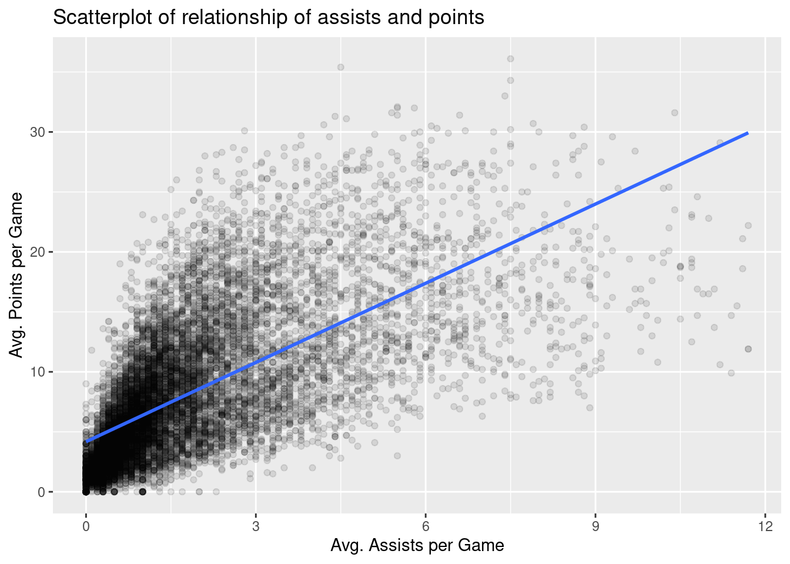

A crucial step before doing any kind of analysis or modeling is performing an exploratory data analysis (EDA). EDA gives you a sense of the distributions of the individual variables in your data, whether any potential relationships exist between variables, whether there are outliers/missing/erroneous values, and (most importantly) how you might begin to build a model of your data. Here are three common steps in an EDA:
Most crucially, looking at the raw data values.
Computing summary statistics, such as means, medians, and interquartile ranges.
Creating data visualizations.
Let’s perform the first common step in an exploratory data analysis: looking at the raw data values. Because this step seems so trivial, unfortunately many data analysts ignore it. However, getting an early sense of what your raw data looks like can often prevent many larger issues down the road.
Let’s load in our nba data:
nba <-read_csv("./data/nba_all_seasons.csv", na =c("Undrafted"))
New names:
Rows: 12305 Columns: 22
── Column specification
──────────────────────────────────────────────────────── Delimiter: "," chr
(5): player_name, team_abbreviation, college, country, season dbl (17): ...1,
age, player_height, player_weight, draft_year, draft_round, ...
ℹ Use `spec()` to retrieve the full column specification for this data. ℹ
Specify the column types or set `show_col_types = FALSE` to quiet this message.
• `` -> `...1`
nba
# A tibble: 12,305 × 22
...1 player_name team_abbreviation age player_height player_weight college
<dbl> <chr> <chr> <dbl> <dbl> <dbl> <chr>
1 0 Dennis Rod… CHI 36 198. 99.8 Southe…
2 1 Dwayne Sch… LAC 28 216. 118. Florida
3 2 Earl Curet… TOR 39 206. 95.3 Detroi…
4 3 Ed O'Bannon DAL 24 203. 101. UCLA
5 4 Ed Pinckney MIA 34 206. 109. Villan…
6 5 Eddie John… HOU 38 201. 97.5 Illino…
7 6 Eddie Jones LAL 25 198. 86.2 Temple
8 7 Elden Camp… LAL 28 213. 113. Clemson
9 8 Eldridge R… ATL 29 193. 86.2 Washin…
10 9 Elliot Per… MIL 28 183. 72.6 Memphis
# ℹ 12,295 more rows
# ℹ 15 more variables: country <chr>, draft_year <dbl>, draft_round <dbl>,
# draft_number <dbl>, gp <dbl>, pts <dbl>, reb <dbl>, ast <dbl>,
# net_rating <dbl>, oreb_pct <dbl>, dreb_pct <dbl>, usg_pct <dbl>,
# ts_pct <dbl>, ast_pct <dbl>, season <chr>
You can also take a more detailed look by using RStudio’s spreadsheet viewer (i.e., View(nba)).
Observe that there are 12305 rows in nba, where each row corresponds to a particular player in a particular NBA season. We won’t get into the the details of all 22 columns in nba, but let’s fully describe a few of them:
player_name: The player’s name.
player_height: The player’s height in centimeters.
player_weight: The player’s weight in kilograms.
pts: The average points the player scored per game in the corresponding season.
ast: The average number of assist the player had per game in the corresponding season.
Sometimes, the data you have loaded comes in a specific order. For example, the comma-delimited file containing our NBA data is ordered by season (early seasons as the top, recent seasons near the bottom). For this reason, inspecting the first few (e.g., via head() or slice_head()) or the last few (e.g., via tail() or slice_tail()) may not give you a good sense of what the data really looks like. An alternative way to look at the raw data values is by choosing a random sample of the rows in nba by piping it into the sample_n() function from the dplyr package. Here we set the size argument to be 5, indicating that we want a random sample of 5 rows. We display the results in Table @ref(tab:five-random-courses). Note that due to the random nature of the sampling, you will likely end up with a different subset of 5 rows.
nba %>%sample_n(size =5)
If you wish, you can request more rows.
Now that we’ve looked at some of the raw values in our nba data frame and got a preliminary sense of the data, let’s move on to the next common step in an exploratory data analysis: computing summary statistics. Let’s start by computing the mean and median of pts and ast. We’ll do this by using the summarize() function from dplyr along with the mean() and median() summary functions we saw in Section 7.4.
nba %>%summarize(mean_pts =mean(pts),mean_ast =mean(ast),median_pts =median(pts),median_ast =median(ast) )
However, what if we want other summary statistics as well, such as the standard deviation, the minimum and maximum values, and various percentiles?
Typing out all these summary statistic functions in summarize() would be long and tedious, particularly if you have many columns in your data frame. You can use a package like skimr (which allows you to “skims” a data frame via commonly used summary statistics(). But let’s instead use a little trick to make the use of summarize() a bit more manageable. Let’s take our nba data frame, select() only the two columns we are interested in (pts and ast) and generate some summary statistics:
What have we done here? We have pivoted our data frame so that it has two columns, one named name and one named value. The name column contains the name of the original column the value was originally taken from (i.e., either “pts” or “ast”). The value column contains the value itself. So now we have a transformed data frame that looks like this:
nba %>%select(pts, ast) %>%pivot_longer(c(pts, ast)) %>%head()
# A tibble: 6 × 2
name value
<chr> <dbl>
1 pts 5.7
2 ast 3.1
3 pts 2.3
4 ast 0.3
5 pts 0.8
6 ast 0.4
We then group by the values in the name column which allows us to specify a summary to be applied to each group (i.e., each column in our original nba data frame) and vastly reduce the amount of duplicate code we need to write. At the end of the code block, we transpose the data frame using pivot() so that we can see all the descriptive statistics.
Here, we have requested the following descriptive statistics:
n_complete: the number of non-missing or complete values
n_missing: the number of missing values
n: the total number of values
mean: the average
sd: the standard deviation
IQR: the interquartile range, the size of the interval that includes values between the 25th percentile and the 75th percentile
min: the minimum value (also the the 0th percentile: the value at which 0% of observations are smaller than it)
p25: the 25th percentile: the value at which 25% of observations are smaller than it (the 1st quartile)
p50: the 50th percentile: the value at which 50% of observations are smaller than it (the 2nd quartile and more commonly called the median)
p75: the 75th percentile: the value at which 75% of observations are smaller than it (the 3rd quartile)
p100: the maximum value (also the the 100th percentile: the value at which 100% of observations are smaller than it)
Looking at this output, we can see how the values of both variables distribute. For example, the mean value of pts is 8.17, whereas the mean value of ast is 1.81. Furthermore, the middle 50% of pts values is between 3.6 and 11.5 (the first and third quartiles), whereas the middle 50% of ast values fall within 0.6 to 2.4.
These statistics provide what are known as univariate summary statistics: functions that take a single variable (i.e., column in our data frame) and return some numerical summary of that variable. However, there also exist bivariate summary statistics: functions that take in two variables and return some summary of those two variables. In particular, when the two variables are numerical, we can compute the correlation coefficient. Generally speaking, coefficients are quantitative expressions of a specific phenomenon. A correlation coefficient is a quantitative expression of the strength of the linear relationship between two numerical variables. Its value ranges between -1 and 1 where:
-1 indicates a perfect negative relationship: As one variable increases, the value of the other variable tends to go down, following a straight line.
0 indicates no relationship: The values of both variables go up/down independently of each other.
+1 indicates a perfect positive relationship: As the value of one variable goes up, the value of the other variable tends to go up as well in a linear fashion.
The correlation coefficient can be computed using the cor() summary function within a summarize():
nba %>%select(c(pts, ast, player_height, player_weight)) %>%summarize(pts_ast_corr =cor(pts, ast))
# A tibble: 1 × 1
pts_ast_corr
<dbl>
1 0.661
In our case, the correlation coefficient of 0.661 indicates that the relationship between pts and ast is positive and relatively strong. There is a certain amount of subjectivity in interpreting correlation coefficients, especially those that aren’t close to the extreme values of -1, 0, and 1. Visualizing the scatterplots above can help as can various effect sizes (e.g., \(r^2\) in the case of Pearson correlation coefficients, which indicate the proportion of variance in one variable explained by the variance in the other variable).
Let’s now perform another critical step in any exploratory data analysis: visualizing your data. Because both the pts and ast are (at least) ordinal scales measurements, a scatterplot is an appropriate means of visualizing this data. Let’s do this using geom_point(). Indeed, we have many quantitative variables in the nba data set and we might wish quickly evaluate the bivariate relationships among several variables. Figure 9.1 illustrates one way that you can construct what is sometimes referred to as a pairplot (packages such as Gally can ease the creation of such plots).
nba %>%select(c(pts, ast, player_height, player_weight)) %>%rowid_to_column() %>%pivot_longer(cols =-rowid) %>%full_join(., ., by ="rowid", relationship ="many-to-many") %>%ggplot(aes(x = value.x, y = value.y)) +geom_point(alpha = .01) +facet_wrap(name.y ~ name.x, scales ="free")
Figure 9.1: Scatterplots illustrating bivariate relationships among several different variables.
Let’s focus on the two variables of interest: pts and ast.
nba %>%ggplot(aes(x = ast, y = pts)) +geom_point(alpha =0.1) +labs(x ="Avg. Assists per Game", y ="Avg. Points per Game",title ="Scatterplot of relationship of assists and points")
Let’s build on this scatterplot by adding a trend line. We do this by adding a new geom_smooth(method = "lm", se = FALSE) layer to the ggplot() code from above. The method = "lm" argument sets the line to be a “linear model.” The se = FALSE argument suppresses standard error uncertainty bars.
nba %>%ggplot(aes(x = ast, y = pts)) +geom_point(alpha =0.1) +labs(x ="Avg. Assists per Game", y ="Avg. Points per Game",title ="Scatterplot of relationship of assists and points") +geom_smooth(method ="lm", se =FALSE)
`geom_smooth()` using formula = 'y ~ x'

The trend line we have added is called a “regression line.” The regression line is a visual summary of the relationship between two numerical variables, in our case pts and ast. The positive slope of the blue line is consistent with our earlier observed correlation coefficient, suggesting that there is a positive relationship between these two variables: a player with a relatively larger number of average assists per game will also tend to have a relatively larger number of average points per game. More information regarding regression can be found in Chapter 14.